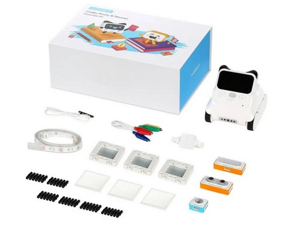
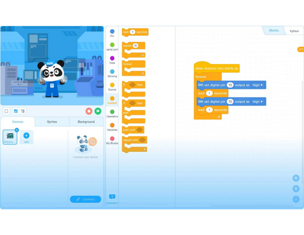
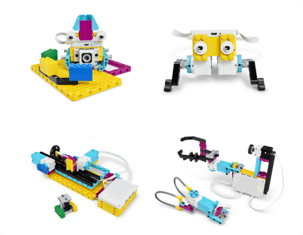

Програмування Junior
Вік:6-8 років
Кількість: 10 учнів
Основним завданням занять є оволодіння основами алгоритмізації та програмування завдяки роботі з навчальними наборами mTiny Makeblock та Matatalab. За допомогою базових алгоритмічних конструкцій змушують робота подолати певний маршрут, оминаючи перешкоди.
mTiny це робот-панда призначений для раннього розвитку дітей, що ростуть в епоху цифрових технологій.
Matatalab розроблений спеціально для дошкільнят та дітей молодшого шкільного віку. Набір підходить для тренування логічного мислення і пам’яті, вивчення основ математики, програмування та навіть музики.
Планування занять:
-
Модуль 1. Алгоритми з Matatalab та mTiny
- Знайомство з роботехнічним набором MatataLab
- Використання програмних блоків: рух прямо та назад, повороти
- Використання програмних блоків: рух прямо та назад, повороти
- Введення поняття циклу, функції та використання відповідних блоків
- Використання наборів для творчості. Художник з MatataLab
- Музикант з MatataLab. Ноти. Звуки. Створення власних мелодій за допомогою програмних блоків
-
Модуль 2. Програмування з Codey Rocky
- Перше знайомство з робототехнічним набором Codey Rocky, основними компонентами та середовищем програмування
- Кнопки управління. Середовище програмування mBlock
- Поняття скрипту. Групи скриптів для персонажів та для робота. Програмування робота на виконання певних дій
- Програмування з Codey Rocky. Програмування робота на виконання певних дій
- Способи поєднання сцени і персонажів з роботом. Codey як контролер
 -
Модуль 3. Cтворення власних ігор в mBlock
- Поняття однорівневих ігор. Поняття сценарію гри. Основні етапи створення гри
- Створення власної гри в mBlock. Виправлення помилок
- Створення власної гри в mBlock. Апробація
- Самостійна проектна діяльність у групах на вільну тему

Робототехніка Spike Prime
Вік: 9-10 років
Кількість: 8 учнів
Основним завданням занять є оволодіння основними поняттями робототехніки, технічного конструювання та моделювання роботів, написання керуючих комп'ютерних програм.
Для створення роботів використовується набір Lego Education SPIKE Prime. SPIKE Prime – це практично-орієнтоване освітнє рішення для STEAM-навчання. Конструктор містить більше 500 яскравих деталей LEGO Technic і програмується за допомогою додатка, який створений на основі Scratch. Також за допомогою програмного забезпечення SPIKE Prime можна вивчати мікро Python.
Планування занять:
-
Модуль 1. Загін винахідників
- Вступ
- Хто швидше?
- Ідеальне прибирання
- Усунути несправність
- Модель для друга
 -
Модуль 2. Запускаємо бізнес
- Наступне замовлення
- Несправність
- СисМодуль спостереження
- Безпека понад усе
- Ще безпечніше!
- Автоматизація виробництва
-
Модуль 3. Корисні пристосування
- Брейк данс
- Повторити 5 раз
- Дощ чи сонце?
- Швидкість вітру
- Піклування про рослини
- Розвиваюча гра
Робототехніка Mindstorms EV3
Вік: 9-10 років
Кількість: 8 учнів
Основним завданням занять є оволодіння основними поняттями робототехніки, технічного конструювання та моделювання роботів, написання керуючих комп'ютерних програм.
Для створення роботів використовується набір Lego Education Mindstorms EV3. Базовий набір Mindstorms EV3 – ідеальне рішення для вивчення предметів STEM. Завдяки ефективному поєднанню зручного у використанні апаратного і програмного забезпечення учні зможуть розвинути навички, необхідні для конструювання і програмування роботів і вирішення комплексних завдань з реального життя.
Планування занять:
-
Модуль 1. Тренування для роботів
- Рух та повороти. Керування рухом
- Об’єкти та перешкоди. Використання ультразвукового датчика
- Захоплення об’єкту. Використання моторизованого інструменту
- Кольори та лінії. Використання датчика кольору
- Кути та шаблони. Використання гіроскопічного датчика і шаблонів «Мої блоки»
- Заводський робот. Освоєння навичків роботи з приводною платформою
- Місія з керування роботом
-
Модуль 2. Інженерна лабораторія
- Метод спроб та помилок. Точність і акуратність
- Перша передача. Базові поняття роботи шестерень
- Перемикання передач. Змінення потужності
- Ковзання вниз по схилу. Коефіцієнт тертя
- Вільне падіння. Прискорення вільного падіння
- Підйом по схилу. Освоєння концепцій сили та руху
-
Модуль 3. Складні проекти
- Побудова та програмування ГироБоя або Сортувальника кольорів
- Побудова та програмування РобоЦуценя або РобоРуки
- Розробка та презентація власного проекту
Програмування на Arduino
Вік:від 11 років
Кількість: 8 учнів
Основним завданням занять є оволодіння поняттями, знаннями з основ електротехніки, програмування, проектування та конструювання з використанням платформи Arduino, засвоєння технічних та технологічних знань та уявлень про особливості робототехніки на платформи Arduino.
Arduino – це апаратна обчислювальна платформа для аматорського конструювання, основними компонентами якої є плата мікроконтролера з елементами вводу/виводу, яка може використовуватися для створення автономних інтерактивних об'єктів.
Планування занять:
-
Модуль 1. Платформа Arduino
- Вступ
- Основні компоненти Arduino
- Основи електроніки
- Керування світлодіодом
- Конденсатори
-
Модуль 2. Шлях до автоматизації
- Автоматика
- Електронні пристрої
- Фоторезистор
- RGB-світлодіод
- П’єзоелектричний випромінювач (buzzer)
- Електронні пристрої і людина
-
Модуль 3. Двигуни
- Двигун постійного струму
- Серводвигун
-
Модуль 4. Автономні Arduino-роботи
- Конструювання робо-машини LineTracker
- Конструювання робо-машини, що оминає перешкоди
- Проектна діяльність
- Змагання роботів